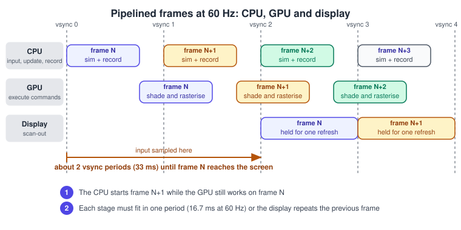
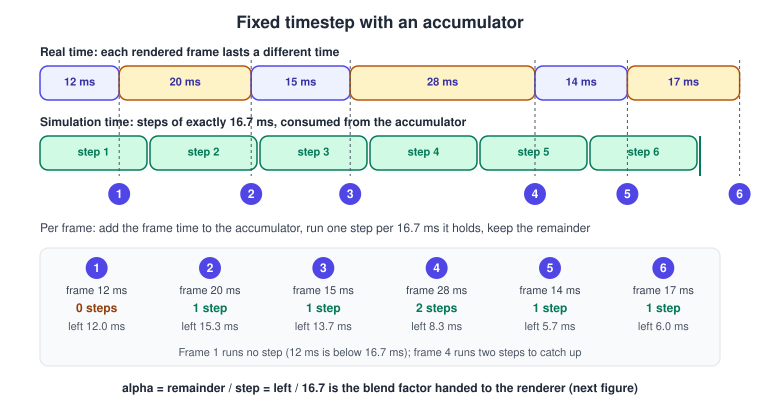
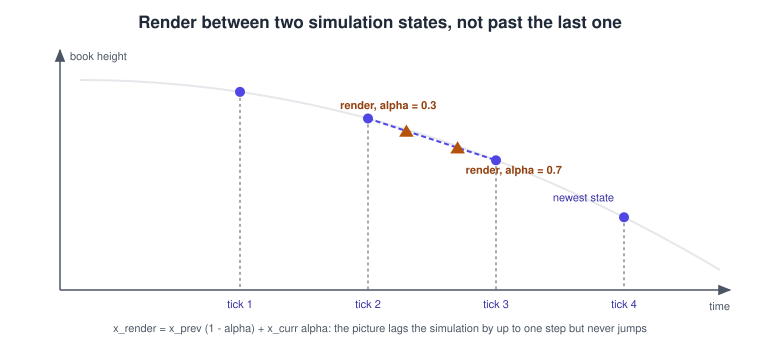
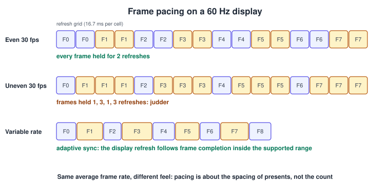

The Game Loop and Frame Timing
|
This content was generated with the assistance of AI and should be verified against the official documentation before being relied on in production. |
Every real-time program is a loop: read input, advance the world by some amount of time, draw, repeat. How the loop measures that amount of time, and how it hands the result to the display, decides whether motion looks smooth, whether physics is stable and whether a game plays the same on a 60 Hz phone and a 240 Hz monitor. This page explains the loop patterns and the timing facts around them. It was checked in November 2026 and refers to Unity 6.3 LTS, Unreal Engine 5.8, Vulkan 1.4, iOS and macOS 26, Android 16 and current browsers. The code is platform code and compiles or runs on the platform it names: C++17 with GLFW, JavaScript in a browser, Swift on Apple platforms, Kotlin on Android, C# in Unity and C++ in Unreal. The running example is the tiny game of this section, "catch the falling books": books drop from the shelf, a basket moves under them, and the score and a 60-second timer are updated by the loop.
For the networking side of a loop, including lockstep and server-authoritative designs, the repository already has the page Multiplayer Game Architecture; this page does not repeat it.
What the loop must do
A frame is one trip around the loop:
-
Sample input: read keyboards, pointers and sensors once, as late as practical.
-
Update: advance the simulation: game logic, animation, physics, audio parameters.
-
Render: build and submit the draw commands for the current state.
-
Present: hand the finished image to the display and wait for the next opportunity to do so.
Two clocks are involved and confusing them is the root of most timing bugs. Simulation time is the game’s own clock:
how far the world has advanced. Real time is the wall clock, measured with a monotonic source such as
std::chrono::steady_clock, performance.now(), CACurrentMediaTime() or System.nanoTime() that never jumps backwards when
the user changes the system date. The loop’s job is to decide how much simulation time each frame consumes. Pause, slow motion,
fast forward and replay all become trivial when the simulation clock is separate from the real clock.

Figure 1 shows why the loop is more than a while statement. Modern systems pipeline frames: while the display shows
frame N, the GPU is shading frame N+1 and the CPU is already preparing frame N+2. Marker 1 is the overlap that keeps all
three units busy, and marker 2 is the rule that each stage must fit in one period. The orange bracket is the price of the
pipeline: input sampled at the start of the CPU stage of frame N appears on screen about two refresh periods later, roughly
33 ms at 60 Hz, plus the display’s own latency.
The frame budget
The budget is the time available for the whole pipeline stage to run so that a new frame is ready at every refresh.
| Refresh or target | Budget per frame | Typical context |
|---|---|---|
30 Hz |
33.3 ms |
Heavy console and mobile titles, battery saving |
60 Hz |
16.7 ms |
The default of most displays and phones |
72 Hz and 90 Hz |
13.9 ms and 11.1 ms |
Standalone VR headsets |
120 Hz |
8.3 ms |
ProMotion iPhones and iPads, high-end Android, consoles |
144 Hz |
6.9 ms |
Gaming monitors |
240 Hz |
4.2 ms |
Competitive gaming monitors |
\[ \Delta t_{ budget } = \frac{ 1000 }{ f_{ refresh } } \text{ ms} \]
The CPU stage and the GPU stage each have to fit in that budget, not their sum, because they overlap. If either one overruns, the display shows the previous frame again and the game visibly stutters.
Variable timestep
The simplest loop measures how long the last frame took and advances the world by exactly that:
last = now()
while running:
t = now()
dt = t - last
last = t
update(dt)
render()Source: Unity Scripting API: Time.deltaTime.
Everything that moves is multiplied by dt, so a book that falls at 2 m/s covers 2 m in a second regardless of frame rate:
\(x \leftarrow x + v \, \Delta t\). This is called frame-rate independence, and it is correct for anything whose update is
exact for any step size (a linear motion, a timer, a progress bar).
It breaks down in three ways:
-
Physics stability. Integration error and constraint solving depend on the step. A stack of books that rests calmly at \(\Delta t = 1/60\) s can explode at \(\Delta t = 1/15\) s, and a fast book can tunnel through a thin shelf board when one step moves it farther than the board is thick.
-
Determinism. The same inputs at different frame rates give different results, so replays, lockstep multiplayer and bug reports are not reproducible.
-
Spikes. A single long frame (an asset load, a garbage collection, the player switching windows) produces one huge
dtand the world jumps. Clampingdtto a maximum helps, which is what Unity does withTime.maximumDeltaTime(the Maximum Allowed Timestep setting) and many engines do with a fixed ceiling.
Smooth easing needs care too. Moving a value toward a target with x += (target - x) * 0.1 per frame reaches the target at
different speeds at different frame rates. The frame-rate independent form uses the exponential:
\[ x \leftarrow x + (x_{ target } - x)\left(1 - e^{ -k \, \Delta t }\right) \]
where \(k\) is the speed constant in 1/s. The same applies to damping of velocities.
Fixed timestep with an accumulator
The standard solution decouples the simulation step from the frame time. Simulation always advances in steps of a constant \(\Delta t_{ fixed }\) (commonly 1/60 s, 1/50 s or 1/120 s), and the frame time is accumulated and consumed in whole steps:
accumulator = 0
last = now()
while running:
t = now()
frameTime = min(t - last, maxFrameTime) // clamp: avoid the spiral of death
last = t
accumulator += frameTime
while accumulator >= dtFixed:
previous = current // keep the last state for interpolation
step(current, dtFixed)
accumulator -= dtFixed
alpha = accumulator / dtFixed // 0 <= alpha < 1
render(previous, current, alpha)Source: Unity Manual: Order of execution for event functions (the fixed-step loop and its maximum timestep).
The same loop as a sequence of messages between the platform, the loop, the simulation and the renderer:

Figure 2 plays the loop on real numbers. Frame 1 takes 12 ms, which is less than one 16.7 ms step, so no step runs and the 12 ms wait in the accumulator. Frame 2 adds 20 ms for a total of 32 ms, one step runs and 15.3 ms remain. Frame 4 is slow, 28 ms, so two steps run to catch up. Over the six frames the simulation ran exactly six steps, and the time left over, 6.0 ms, is carried to the next frame instead of being lost. The green bar that closes the simulation lane marks simulation time, which trails the real time of frame 6 by exactly that remainder.
The properties that make this the default for physics-driven games:
-
Stable. The integrator always sees the same \(\Delta t\), so it is tuned once.
-
Deterministic in simulation time, which is the precondition for replays and lockstep networking (floating-point results can still differ between CPU architectures and compilers, so cross-platform lockstep needs care).
-
Bounded cost. The
maxFrameTimeclamp, typically 0.1 to 0.25 s, prevents the spiral of death: if a step takes longer than \(\Delta t_{ fixed }\) of real time, each frame needs more steps than the last and the game never recovers. With the clamp, the simulation slows down instead (it runs in slow motion) while the frame rate recovers.
Interpolation, not extrapolation
The simulation clock advances in jumps of 16.7 ms while the display refreshes on its own schedule, so a frame is usually rendered between two steps. Drawing the latest state would show a book at the position it had up to one step ago, and the irregular match between the two clocks produces visible judder, especially when the display rate is not a multiple of the step rate (a 144 Hz monitor with a 60 Hz simulation). The fix is to keep the two most recent states and blend them with \(\alpha\), the fraction of a step that is left in the accumulator:
\[ x_{ render } = x_{ previous } (1 - \alpha) + x_{ current } \alpha \qquad \alpha = \frac{ accumulator }{ \Delta t_{ fixed } } \]
Rotations blend with spherical linear interpolation; see Rotations and Quaternions.

Interpolation costs one step of latency (the picture shows the world as it was between the last two steps) and one extra copy of the renderable state. Extrapolation, predicting forward from the latest state, avoids the latency but shows mistakes when the motion changes direction, such as a book hitting the shelf, and is rarely worth it for rendering. It is used, in a different form, by networked games, which predict remote players.
The Bookshelf loop in C++
The following complete program is the fixed-step loop of "catch the falling books" using GLFW to open a window and read the
clock. The game logic (step) is deliberately tiny so that the loop stays in focus, and rendering is a stub that receives
the interpolation factor.
// build: cmake with find_package(glfw3), link glfw; C++17
#include <GLFW/glfw3.h>
#include <algorithm>
#include <cmath>
#include <cstdio>
#include <random>
#include <vector>
struct Book { int id; float x, y, vy; }; // id keeps interpolation correct when books vanish
struct World {
float basketX = 0.0f; // basket position
std::vector<Book> books;
int score = 0;
float timeLeft = 60.0f; // seconds of simulation time
float spawnTimer = 0.0f;
int nextId = 0;
};
static std::mt19937 rng(249); // fixed seed: reproducible runs
static void step(World& w, float dt, float moveAxis) {
constexpr float gravity = -9.81f, basketHalf = 0.12f, basketY = 0.05f;
w.timeLeft = std::max(0.0f, w.timeLeft - dt);
w.basketX = std::clamp(w.basketX + moveAxis * 1.2f * dt, -0.55f, 0.55f);
w.spawnTimer -= dt;
if (w.spawnTimer <= 0.0f) { // drop a new book from the top shelf
std::uniform_real_distribution<float> pick(-0.5f, 0.5f);
w.books.push_back({w.nextId++, pick(rng), 1.0f, 0.0f});
w.spawnTimer += 0.8f;
}
for (Book& b : w.books) { // semi-implicit Euler
b.vy += gravity * dt;
b.y += b.vy * dt;
if (b.y <= basketY && std::abs(b.x - w.basketX) < basketHalf) {
++w.score;
b.y = -1.0f; // caught: mark for removal
}
}
w.books.erase(std::remove_if(w.books.begin(), w.books.end(),
[](const Book& b) { return b.y < 0.0f; }), w.books.end());
}
static void render(const World& prev, const World& cur, float alpha) {
// Blend by id: a book born this step exists only in 'cur' and is drawn where it is.
for (const Book& c : cur.books) {
float y = c.y;
for (const Book& p : prev.books) {
if (p.id == c.id) { y = p.y * (1.0f - alpha) + c.y * alpha; break; }
}
std::printf("book %d at y=%.3f\n", c.id, y); // replace with draw calls
}
}
int main() {
if (!glfwInit()) return 1;
GLFWwindow* window = glfwCreateWindow(960, 540, "Catch the falling books", nullptr, nullptr);
glfwMakeContextCurrent(window);
glfwSwapInterval(1); // vsync: present on the next refresh
constexpr double dtFixed = 1.0 / 60.0, maxFrame = 0.25;
World previous, current;
double accumulator = 0.0, last = glfwGetTime(); // monotonic seconds
while (!glfwWindowShouldClose(window) && current.timeLeft > 0.0f) {
const double now = glfwGetTime();
accumulator += std::min(now - last, maxFrame); // clamp spikes
last = now;
glfwPollEvents();
const float axis = (glfwGetKey(window, GLFW_KEY_RIGHT) == GLFW_PRESS) -
(glfwGetKey(window, GLFW_KEY_LEFT) == GLFW_PRESS);
while (accumulator >= dtFixed) {
previous = current;
step(current, static_cast<float>(dtFixed), static_cast<float>(axis));
accumulator -= dtFixed;
}
render(previous, current, static_cast<float>(accumulator / dtFixed));
glfwSwapBuffers(window);
}
std::printf("final score: %d\n", current.score);
glfwTerminate();
}The program copies the whole World into previous each step. That is fine for a few dozen books; larger games copy only the
transforms that are rendered, or keep two transform buffers per entity and swap them (see
Entity Component System).
Where the loop is driven from
On a desktop program, the loop is a while statement and a blocking call to swap buffers keeps it in step with the display.
Elsewhere the platform owns the loop and calls you, once per display refresh. Using that callback instead of sleep is the
rule on every platform that has one: a sleep has a coarse and varying granularity (several milliseconds on some systems),
whereas the callback is aligned to the display.
Web: requestAnimationFrame
requestAnimationFrame(callback) asks the browser to call you before the next repaint. The callback receives a high
resolution timestamp, in milliseconds, equal to the time at which the frame started. It runs at the display’s refresh rate
(60, 120, 144 Hz and so on), is paused in background tabs and hidden frames to save power, and must be re-armed each time.
The same callback pattern applies to WebGPU and WebGL canvases, and a WebXR session has its own requestAnimationFrame that
fires at the headset’s rate.
const dtFixed = 1000 / 60; // ms
const maxFrame = 250; // ms, clamp after tab switches or pauses
let last = performance.now();
let accumulator = 0;
let prev = initialState();
let curr = initialState();
function frame(now) {
accumulator += Math.min(now - last, maxFrame);
last = now;
while (accumulator >= dtFixed) {
prev = structuredClone(curr);
step(curr, dtFixed / 1000, input.axis); // seconds
accumulator -= dtFixed;
}
render(prev, curr, accumulator / dtFixed);
requestAnimationFrame(frame);
}
requestAnimationFrame(frame);Source: MDN: Window.requestAnimationFrame().
Browsers may throttle the callback below the display rate on battery saver or low-power modes and in cross-origin iframes. Never assume 60 Hz: always read the timestamp.
Apple platforms: CADisplayLink and CAMetalDisplayLink
CADisplayLink fires once per display refresh and exposes timestamp (the previous frame) and targetTimestamp (when the
next frame will be shown). Since iOS 15 you request a frame rate range with preferredFrameRateRange instead of the old
preferredFramesPerSecond; on iPhones with ProMotion a high maximum is honoured for custom animation only if the app’s
Info.plist sets CADisableMinimumFrameDurationOnPhone to true. For Metal, MTKView wraps the loop (preferredFramesPerSecond,
isPaused, enableSetNeedsDisplay), and CAMetalDisplayLink, available since iOS 17 and macOS 14, drives a CAMetalLayer
directly and hands you the drawable together with the target presentation timestamp, so the render can be scheduled for a
known time. On macOS 14 and later NSView.displayLink(target:selector:) replaces the older CVDisplayLink, which Apple
deprecated in macOS 15.
import QuartzCore
import Metal
final class GameLoop: NSObject, CAMetalDisplayLinkDelegate {
private var link: CAMetalDisplayLink!
private var last: CFTimeInterval = 0
private var accumulator: CFTimeInterval = 0
private let dtFixed: CFTimeInterval = 1.0 / 60.0
private var previous = World(), current = World()
func start(layer: CAMetalLayer) {
link = CAMetalDisplayLink(metalLayer: layer)
link.delegate = self
link.preferredFrameLatency = 2 // frames the GPU may run ahead
link.preferredFrameRateRange = CAFrameRateRange(minimum: 60, maximum: 120, preferred: 120)
link.add(to: .main, forMode: .common)
}
func metalDisplayLink(_ link: CAMetalDisplayLink, needsUpdate update: CAMetalDisplayLink.Update) {
let now = update.targetTimestamp // when this frame will be on screen
if last == 0 { last = now }
accumulator += min(now - last, 0.25)
last = now
while accumulator >= dtFixed {
previous = current
current.step(dt: Float(dtFixed))
accumulator -= dtFixed
}
let alpha = Float(accumulator / dtFixed)
render(previous, current, alpha, drawable: update.drawable) // encode and present
}
}Android: Choreographer
Choreographer delivers a callback aligned with the display’s vertical sync. You register with postFrameCallback,
the callback receives the frame time in nanoseconds, and you re-post it for the next frame. Android 13 added
postVsyncCallback with FrameData, which exposes the available frame timelines and their deadlines. For OpenGL ES and
Vulkan games the Android Game Development Kit provides the Frame Pacing library (Swappy), which wraps swap chain presentation
and picks swap intervals so frames are spaced evenly, and Surface.setFrameRate() (Android 11 and later) tells the
system the rate the content wants so that variable-refresh panels can match it.
import android.view.Choreographer
class GameLoop(private val world: World) : Choreographer.FrameCallback {
private val dtFixed = 1.0 / 60.0
private var lastNanos = 0L
private var accumulator = 0.0
private var previous = world.copy()
fun start() = Choreographer.getInstance().postFrameCallback(this)
override fun doFrame(frameTimeNanos: Long) {
if (lastNanos == 0L) lastNanos = frameTimeNanos
accumulator += minOf((frameTimeNanos - lastNanos) / 1e9, 0.25)
lastNanos = frameTimeNanos
while (accumulator >= dtFixed) {
previous = world.copy()
world.step(dtFixed.toFloat())
accumulator -= dtFixed
}
render(previous, world, (accumulator / dtFixed).toFloat())
Choreographer.getInstance().postFrameCallback(this) // must be re-posted every frame
}
}Presentation: vsync, buffering and tearing
The display reads its image at a fixed rate. If the GPU swaps the image while the display is half-way through reading it, the top and bottom of the screen show different frames: tearing. Vertical sync (vsync) makes the swap wait for the refresh boundary. The costs are latency, since a finished frame waits for the next refresh, and quantisation: if a frame misses a refresh by one millisecond on a 60 Hz display with plain double buffering, it waits a whole period and the frame rate halves to 30 Hz.
Buffering depth and latency form the trade-off. With double buffering one buffer is on screen and one is being drawn; with triple buffering a third lets the GPU keep working while a frame waits for the refresh, which prevents the halving at the price of up to one more frame of latency. Adaptive sync (FreeSync, G-Sync, VESA Adaptive-Sync, HDMI VRR and Apple ProMotion) turns the display into the follower: it refreshes when the frame arrives, within a supported range, so a missed refresh costs a late frame rather than a repeated one.

Figure 4 compares three ways of showing 30 frames per second. The first row holds each frame for exactly two refreshes and looks smooth. The second has the same average rate but presents frames after one and then three refreshes, which the eye sees as judder. The third row is a variable-refresh display, where the refresh interval follows the frame interval. Compare the first two rows: the frame count is identical, the spacing is not.
Each API exposes presentation control:
| API | Control |
|---|---|
OpenGL, EGL |
|
Vulkan |
|
Metal |
|
WebGL, WebGPU |
No control: the browser composites on |
Direct3D 12 (context) |
|
The Vulkan choice, written in C++, is the standard "prefer mailbox, otherwise FIFO" selection:
#include <vulkan/vulkan.h>
#include <vector>
VkPresentModeKHR choosePresentMode(VkPhysicalDevice gpu, VkSurfaceKHR surface, bool lowLatency) {
uint32_t count = 0;
vkGetPhysicalDeviceSurfacePresentModesKHR(gpu, surface, &count, nullptr);
std::vector<VkPresentModeKHR> modes(count);
vkGetPhysicalDeviceSurfacePresentModesKHR(gpu, surface, &count, modes.data());
if (lowLatency) {
for (VkPresentModeKHR m : modes) {
if (m == VK_PRESENT_MODE_MAILBOX_KHR) return m; // triple-buffered, no tearing
}
}
return VK_PRESENT_MODE_FIFO_KHR; // guaranteed by the specification
}Frames in flight
The CPU must not write a buffer the GPU is still reading. Explicit APIs (Vulkan, Metal, Direct3D 12 and WebGPU) therefore keep a small number of frames in flight, usually 2 or 3, each with its own command buffers, uniform buffers and a fence or semaphore. The loop waits for the oldest frame’s fence before reusing its resources. More frames in flight hide CPU or GPU spikes at the cost of latency; one frame in flight serialises the CPU and GPU.
Engines
Engines hide the loop but expose the same ideas. Learn where each engine places the fixed step, because physics code placed in the wrong callback is the most common timing bug in them.
Unity 6.3
Unity runs Update once per rendered frame with Time.deltaTime, LateUpdate after all Update calls, and FixedUpdate
zero or more times per frame at the Fixed Timestep (Time.fixedDeltaTime, default 0.02 s, which is 50 Hz). Physics runs after
FixedUpdate. Inside FixedUpdate, Time.deltaTime returns the fixed step. Time.maximumDeltaTime (Maximum Allowed Timestep,
default one third of a second) is the accumulator clamp. Rigidbody.interpolation set to Interpolate blends the rendered
transform between the last two physics steps exactly as in Figure 3. The frame rate is set with Application.targetFrameRate
and QualitySettings.vSyncCount; when vSyncCount is greater than zero the target frame rate is ignored.
using UnityEngine;
[RequireComponent(typeof(Rigidbody))]
public class FallingBook : MonoBehaviour
{
Rigidbody body;
void Awake()
{
body = GetComponent<Rigidbody>();
body.interpolation = RigidbodyInterpolation.Interpolate; // smooth between physics steps
Time.fixedDeltaTime = 1f / 60f; // physics at 60 Hz instead of 50 Hz
}
void FixedUpdate()
{
// physics-related code: forces, velocity changes, using the fixed step
body.AddForce(Vector3.down * 0.5f, ForceMode.Acceleration);
}
void Update()
{
// per-frame code: input sampling, UI, animation parameters (uses Time.deltaTime)
if (transform.position.y < -1f) Destroy(gameObject);
}
}Changing Time.fixedDeltaTime at runtime affects all physics, so set it once at startup or in Project Settings > Time. The
Unity Entities (DOTS) packages run systems in simulation groups, and FixedStepSimulationSystemGroup provides the equivalent
fixed-rate group.
Unreal Engine 5.8
Unreal ticks actors and components with Tick(float DeltaSeconds) in tick groups (TG_PrePhysics, TG_StartPhysics,
TG_DuringPhysics, TG_EndPhysics, TG_PostPhysics and later groups), so the engine can order gameplay code around the physics
update. Chaos Physics can substep a long frame into steps of a maximum size, with the settings in Project Settings >
Physics: Substepping, Max Substep Delta Time and Max Substeps. Chaos can also run its simulation asynchronously on a fixed
tick, with an interpolated result. The frame rate is capped with the console variable t.MaxFPS or the Fixed Frame Rate project
setting. The engine separates the game thread from the render thread and the RHI thread, so a frame in Unreal is a short
pipeline in itself.
; Config/DefaultEngine.ini
[/Script/Engine.PhysicsSettings]
bSubstepping=True
MaxSubstepDeltaTime=0.016667
MaxSubsteps=6Source: Unreal Engine documentation: Physics.
In C++, an actor ticks like this; set PrimaryActorTick.TickGroup to run before or after physics:
AFallingBook::AFallingBook()
{
PrimaryActorTick.bCanEverTick = true;
PrimaryActorTick.TickGroup = TG_PrePhysics; // run before the physics step
}
void AFallingBook::Tick(float DeltaSeconds)
{
Super::Tick(DeltaSeconds);
Age += DeltaSeconds; // variable step: use for visuals and timers
if (Age > 10.f) { Destroy(); }
}Source: Unreal Engine documentation: Actors.
RealityKit, three.js and the rest
RealityKit’s System.update(context:) receives SceneUpdateContext.deltaTime once per rendered frame (a variable step), so physics
is run by the engine and only gameplay is done in systems. three.js has no loop at all: you write the requestAnimationFrame
loop, or call renderer.setAnimationLoop(fn), which also works in WebXR sessions.
Common mistakes
-
Using wall-clock time.
Date.now()andSystem.currentTimeMillis()jump when the clock is adjusted. Use a monotonic clock. -
Frame-count timers. "After 60 frames" is one second only at 60 Hz. Convert to time.
-
Reading input in the fixed step without latching. A button press that lasts one frame can fall between two steps and be lost, or be seen twice if the frame runs two steps. Latch "pressed this frame" events and clear them after the steps ran.
-
Missing the clamp. Returning to a suspended app or a tab produces one huge frame, hence thousands of steps.
-
Simulating in the render callback. Doing physics once per
Updatemakes it frame-rate dependent. UseFixedUpdate, a fixed step, or a substepping setting. -
Sleeping to cap frame rate.
sleep(16)is imprecise and creates uneven pacing. Present at vsync, use the platform’s frame-rate hint or a high-resolution wait on the frame deadline, and prefer the display link. -
Optimising the average. A 60 fps average with a hitch every second feels worse than a steady 45 fps. Measure the frame time distribution (99th percentile), not the mean.
-
Forgetting that hitches have causes. Typical culprits are shader and pipeline compilation at first use, garbage collection, texture streaming and allocation inside the loop. Warm pipelines up during loading and avoid per-frame allocation.
Performance notes
-
Budget each stage. At 60 Hz the CPU stage needs to finish its game, animation, culling and command recording in well under 16.7 ms, on the slowest supported device, with headroom for thermal throttling on mobile.
-
Use threads where the engine does. Separate game, render and (in some engines) GPU-submission threads, and a job system for parallel work, convert a long serial frame into a pipeline; see the frame timeline in Figure 1.
-
Run the simulation at a lower rate than the display when it is expensive. A 30 Hz or 20 Hz simulation interpolated at the display rate is a common technique for crowds and AI.
-
Match the rate to the content. On variable-refresh phones and laptops, rendering at the content’s natural rate (30 or 60) saves battery and reduces heat; ask the platform for it (
CAFrameRateRange,Surface.setFrameRate). -
Watch the latency chain. Input sampling, frames in flight, vsync mode, the compositor and the display all add to latency. Sampling input late in the frame, using a low-latency present mode and avoiding unnecessary buffering reduce it.
Recent changes
| Version or date | Change |
|---|---|
iOS 15, 2021 |
|
Android 11, 2020 |
|
Android 13, 2022 |
|
iOS 17 and macOS 14, 2023 |
|
macOS 15, 2024 |
|
Unreal Engine 5 |
Chaos replaces the earlier physics engine, with substepping and an asynchronous fixed-rate physics tick |
Where the older books are outdated
Selman’s Java 3D Programming and Sun’s The Java 3D API Specification describe the loop through Behavior objects scheduled
with wake-up conditions such as "elapsed frames" or "elapsed time", and treat frame timing as something the Java 3D renderer
handles internally. That model survives in spirit (events and updates scheduled by the engine), but engines today expose the
loop explicitly, the display link and presentation timing are controlled by the application, and fixed-step physics with
interpolation is the norm. Java 3D itself is a community project (JogAmp) and is no longer a common choice for new games.
See it in
WebGL: three.js: Getting Started; Metal: MetalKit, MTKView and SwiftUI; Vulkan: Timeline Semaphores and Frames in Flight and Bookshelf 2: The Scene and the Game; Unity: C# Scripting and the MonoBehaviour Lifecycle; Unreal Engine: Actors and Components.